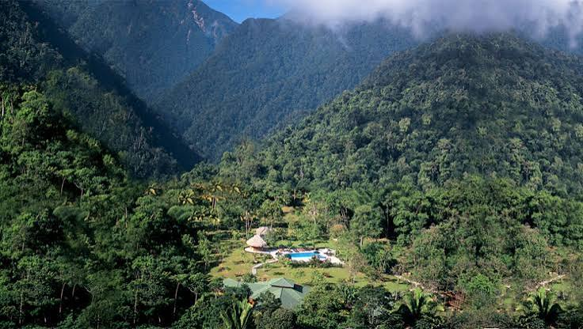

Parque Nacional Pico Bonito

Descripción física
Parque nacional ubicado en la zona norte de Honduras, caracterizado por sus montañas, bosques tropicales, ríos y cascadas.
Principales atractivos
- Bosques tropicales
- Ríos y cascadas
- Senderos naturales
- Observación de aves
- Paisajes montañosos
Nivel de dificultad
Media - Alta
Distancias y tiempos de traslado
| Ciudad de origen | Distancia aproximada | Altitud | Tiempo estimado de traslado |
|---|---|---|---|
| Tegucigalpa | 400 km | 990 msnm | 7 horas |
| San Pedro Sula | 200 km | 83 msnm | 3 horas |
| La Ceiba | 20 km | 10 msnm | 30 minutos |
| Comayagua | 320 km | 594 msnm | 5 horas |